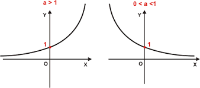

Função Afim
A função afim, também chamada de função do 1º grau, é uma função f : ℝ → ℝ, definida como f(x) = ax + b, sendo a e b números reais.
As funções f(x) = x + 5, g(x) = 3√3x -8 e h(x) = 1/2 x são exemplos de funções afins.
Neste tipo de função, o número a é chamado de coeficiente de x e representa a taxa de crescimento ou taxa de variação da função. Já o número b é chamado de termo constante.
Gráfico de função do 1º grau
O gráfico de uma função polinomial do 1º grau é uma reta oblíqua aos eixos Ox e Oy. Desta forma, para construirmos seu gráfico basta encontrarmos pontos que satisfaçam a função.
Exemplo: Construa o gráfico da função f(x) = 2x + 3.
Solução: Para construir o gráfico desta função, vamos atribuir valores arbitrários para x, substituir na equação e calcular o valor correspondente para a f (x). Sendo assim, iremos calcular a função para os valores de x iguais a: - 2, - 1, 0, 1 e 2. Substituindo esses valores na função, temos:
f(-2) = 2 . (-2) + 3 = -4 + 3 = -1
f(-1) = 2 . (-1) + 3 = -2 + 3 = 1
f(0) = 2 . 0 + 3 = 3
f(1) = 2 . 1 + 3 = 5
f(2) = 2 . 2 + 3 = 7
No exemplo, utilizamos vários pontos para construir o gráfico, entretanto, para definir uma reta bastam dois pontos. Para facilitar os cálculos podemos, por exemplo, escolher os pontos (0,y) e (x,0). Nestes pontos, a reta da função corta o eixo Ox e Oy, respectivamente.
Coeficiente Linear e Angular
Como o gráfico de uma função afim é uma reta, o coeficiente a de x é também chamado de coeficiente angular. Esse valor representa a inclinação da reta em relação ao eixo Ox.
O termo constante b é chamado de coeficiente linear e representa o ponto onde a reta corta o eixo Oy. Pois sendo x = 0, temos: y = a . 0 + b ⇒ y = b
Quando uma função afim apresentar o coeficiente angular igual a zero (a = 0) a função será chamada de constante. Neste caso, o seu gráfico será uma reta paralela ao eixo Ox.
Abaixo representamos o gráfico da função constante f (x) = 4:
Ao passo que, quando b = 0 e a = 1 a função é chamada de função identidade. O gráfico da função f (x) = x (função identidade) é uma reta que passa pela origem (0,0).
Além disso, essa reta é bissetriz do 1º e 3º quadrantes, ou seja, divide os quadrantes em dois ângulos iguais, conforme indicado na imagem abaixo:
Temos ainda que, quando o coeficiente linear é igual a zero (b = 0), a função afim é chamada de função linear. Por exemplo, as funções f (x) = 2x e g (x) = - 3x são funções lineares. O gráfico das funções lineares são retas inclinadas que passam pela origem (0,0).
Representamos abaixo o gráfico da função f(x) = -3x
Função Crescente e Decrescente
Uma função é crescente quando ao atribuirmos valores cada vez maiores para x, o resultado da f (x) será também cada vez maior. Já a função decrescente é aquela que ao atribuirmos valores cada vez maiores para x, o resultado da f (x) será cada vez menor.
Para identificar se uma função afim é crescente ou decrescente, basta verificar o valor do seu coeficiente angular. Se o coeficiente angular for positivo, ou seja, a é maior que zero, a função será crescente. Ao contrário, se a for negativo, a função será decrescente.
Por exemplo, a função 2x - 4 é crescente, pois a = 2 (valor positivo). Entretanto, a função - 2x + - 4 é decrescente visto que a = - 2 (negativo). Essas funções estão representadas nos gráficos abaixo:
